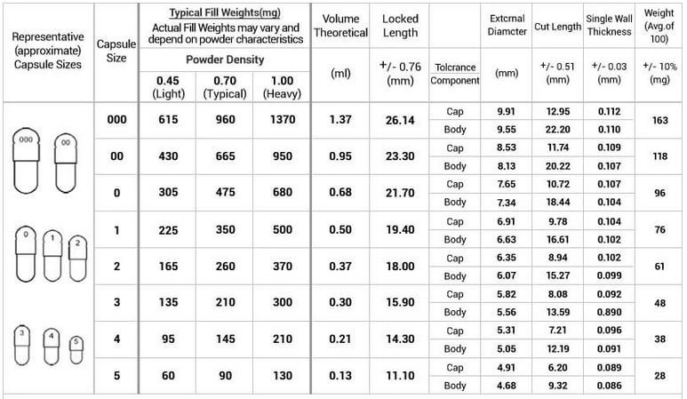

HRT Encapsulation Tutorial
Anti-androgens bicalutamide and newly available Relugolix are commonly used orally for suppressing testosterone. These raw powders are annoying to take, so putting them in capsules is ideal for convenience and to avoid accidents. Relugolix in particular is of interest because it is an oral GNRH Antagonist (Puberty Blocker) medication and lacks dangerous side effects.
This is a new procedure which has not been fully tested yet, but is safer than other guides it is aiming to replace.
Please note that encapsulation comes with the risk of incorrect powder mixing which can cause an overdose. This guide includes safeguards to prevent this due to clumping, but some may still avoid encapsulation due to risk of overdose. I am interested in advice to make this guide safer.
Please make sure that whatever you're compounding is safe to compound. In particular, DO NOT compound pure Vitamin D into capsules. Vitamin D is extremely potent, especially via inhalation, so much so that a one-time exposure to trace amounts of dust during compounding may be enough to result in overdose and death. Please be careful, and avoid compounding things that you don't need to compound.
I would specifically NOT advise compounding of “high risk” medications such as estradiol and cyproterone acetate via this tutorial until we are able to provide better assurance an overdose is unlikely. For size 1 capsules, you can fit approx 360 mg of powder into a capsule. Bicalutamide and Relugolix are considered reasonable to compound this way, as 600mg of bicalutamide is tolerated in clinical trials and 360mg of Relugolix is considered an acceptable loading dose for interrupted treatment in prostate cancer patients. Both medications also have high half lives. Additionally compounding finasteride is not recommended due to low dose and the risk to pregnant mothers if coming into contact with very small amounts of powder.
If you insist on making capsules of high risk medications, using a tumbler powder mixer with loose elements inside to break up clumps or using geometric dillution is highly recommended. We do not currently have any procedures or suggestions for such a process, but feedback is welcome.
DO NOT BUY A PILL PRESS MACHINE IF YOU LIVE IN THE US
Supplies
Tools (non-consumable):
- Scale
- 500g (.01 resolution)
- Should be fine for Relugolix and bicalutamide as the target API amount is 4-5g, but the higher resolution one is preferred if you have it.
- You can get by with only the 20g scale for measuring powder fillers, but it may get annoying as you have to split measuring into multiple steps.
- 20g (.001 resolution)
- Needed for measuring the amount of powder packed into individual capsules for determining recipes.
- Ideal for measuring smaller amounts of API powders, but be weary if you are using batch sizes this small capsule mixing accuracy becomes a concern.
- 5kg (0.01 resolution)
- 500g (.01 resolution)
- Capsule Machine
- Note that depending on where you are located these may be regulated. This usually means you are reported as someone who purchased a capsule machine, but many people use these for making custom supplements. You may be able to buy one locally at a vitamin shop.
- Shaker Ball/Whisk - Used to help break up clumps during mixing
- Powder Sieve - Used to help
break up and remove clumps after mixing
- Note: Untested, will want to validate this is the correct sieve to buy
- You can also buy an automated version of this
- Mason Jar - For mixing powder
in. You can probably find these locally too.
- Large Bowl or Measuring Cup - Used to catch sifted powder. Not needed if you buy the automated sifting machine.
Consumables:
- There are multiple capsule excipient options
available, with various advantages and disadvantages. White Rice
Flour is inexpensive and has a good shelf life.
- ProCap 90 - Expensive excipient based on Microcrystalline Cellulose. It does not cause allergies, mixes well, and is easy to work with.
- Lactose Monohydrate NF (Spray Dried) - Cheaper and cleaner than ProCap 90, but doesn’t mix as well and is problematic for lactose intolerant people.
- White Rice Flour - Cheap and can be found locally. Does not flow as well as other options but mixes well with micronized medications.
- Coconut Flour - Cheapest and can be found locally. It is a different color than the API usually so it should be easy to see how well mixed it is.
- Gelatin Capsules - Holds the mixture of API and filler. We are using size 1 capsules for this tutorial. You can also buy these locally from vitamin stores. If you are making a lot of capsules, you can buy the two sides pre-separated which may save you time.
- Weight Boats - Optional, but makes weighing powders less annoying.
APIs:
APIs can be purchased from Vanz.
- Bicalutamide 90357-06-5
- 100g $160
- Relugolix 737789-87-6
- 10g $130
- 50g $400
- 100g $650
Determining Recipe
Determining capsule fill recipes is not an exact process and may be annoying. For reference, here are some values for expected fill amounts:

To get an approximate recipe:
- Weight a capsule without any filler in it.
- If you are using the lower precision scale (i.e. not the 20g 0.001g precision one), using several capsules is suggested.
- Fill the capsule with your filler of choice and
tamp it with the tamper which came with your capsule filler.
- If you are mixing your APIs and filler with a mortar and pestle and they are not already micronized, you should do this test with powders which have also been ground using a mortar and pestle.
- Weigh the capsule with filler in it.
- Subtract the empty mass from the filled mass and divide by the number of capsules.
- Repeat this process for your APIs too.
- You may be able to get by without doing this, but the error rate could get rather high even for a 50mg capsule, for instance for bica the error rate with procap would be 17% whereas with rice flour it would be 3%.
- To determine the amount of powder needed for the
entire batch, convert the API mg to volume of the capsule, and then calculate the
expected amount of filler to take up the rest of the capsule. See the example recipes
below to get an idea of how to calculate your recipe.
- Divide the mass of the API you want (eg Bicalutamide) by the density.
- You now have a ratio value with how much of the capsule is filled with API.
- Subtract that from 1 to determine the ratio of empty space in the capsule.
- Multiply that ratio by the density of the filler to determine the amount of filler per capsule.
- Multiply by 100 and divide by 1000 to get the mass in grams for 100 capsules for the API and for the filler.
Example Recipes
Please note that these numbers are guidelines!
I do not have access to the exact same powder and filler as you do, and humidity and other factors can affect packing density. You may have to undergo some trial-and-error to correctly fill your capsules. These recipes are based on tested density values for size 1 capsules.
Bicalutamide 50mg with ProCap 90
| Ingredient | Mass (mg) | Density (mg/capsule) | % Volume | Batch Mass (g) |
|---|---|---|---|---|
| Bicalutamide | 50 | 456 | 10.96% | 5 |
| ProCap 90 | 172.73 | 172.73 | 89.04% | 17.27 |
Bicalutamide 50mg with Rice Flour
| Ingredient | Mass (mg) | Density (mg/capsule) | % Volume | Batch Mass (g) |
|---|---|---|---|---|
| Bicalutamide | 50 | 456 | 10.96% | 5 |
| Rice Flour | 325.87 | 366 | 89.04% | 32.59 |
Relugolix 40mg with ProCap 90
| Ingredient | Mass (mg) | Density (mg/capsule) | % Volume | Batch Mass (g) |
|---|---|---|---|---|
| Relugolix | 40 | 244 | 16.39% | 4 |
| ProCap 90 | 162.20 | 194 | 83.61% | 16.22 |
Relugolix 50mg with Rice Flour
| Ingredient | Mass (mg) | Density (mg/capsule) | % Volume | Batch Mass (g) |
|---|---|---|---|---|
| Relugolix | 40 | 244 | 16.39% | 4 |
| Rice Flour | 306.00 | 366 | 83.61% | 30.60 |
Procedure
It is important to have a clean work area for this and wear gloves. Note however that cleaning capsule filling machines with IPA may cause them to degrade, so instead washing with soap and water is recommended. Ensure everything is completely dry before starting. The process of filling capsules is somewhat time consuming. The process can be somewhat messy, so you may want something placed under your workspace to catch any powder that may fall off of your equipment.
- Using your recipe developed earlier, weigh out the
correct amount of filler and then API and put both into the mason
jar.
- If you are using the high precision scale for this, weight boats are suggested.
- Place the shaker ball/whisk into the mason jar and tightly close the lid of the jar.
- Shake vigorously for at least two minutes, making
sure to change the orientation of the jar in various
directions.
- Your goal is to approximate what pharmaceutical mixing machines do manually.
- If there is powder floating in the container, allow it to settle.
- Place the sieve over your container and pour the
powder into the sieve. Sift the powder into the lower container to
break up clumps.
- For additional safety, repeat steps 2-5 using fresh containers a second time.
- Be careful to avoid making a dust cloud and getting the API mixture everywhere.
- Follow the directions which came with your capsule
machine to fill the capsules.
- If you are using the machine I linked, there is an online document and a video tutorial explaining the process.
- Continue reading this guide for a text version of how to operate the machine with some specific tips for avoiding problems.
- Separate 100 capsules into bottom and top
pieces.
- You can use the weight boats to hold the capsule tops and bottoms while doing this.
- Place the body plate on the table, ensuring no plates are placed on top of it. The body plate is the main assembly of the capsule filler which serves as the base and contains spring loaded components.
- Place the frame plate on top of the body plate. The
frame plate is used to fill the capsule machine with the larger of
the capsule halves. Shake it gently to allow most of the capsules to
fall into place.
- You may need to manually move capsule halves between holes and flip them over. A set of tweezers can be useful for this.
- Remove the frame plate and place the spill guard on top of the body plate. The spill guard is a guard that prevents the powder from spilling off the side of the machine.
- Pour the powder onto the machine and use the powder spreader (a flat plastic card) to spread the powder and cause it to fall into the capsules.
- Use the tamper tool to force the powder into the capsules and make more room for more powder.
- Repeat steps 11 and 12 until all of the powder has
been transferred to the capsules.
- Note: You may want to pull up the spill guard and check under there for powder which needs to be used still.
- Place the body plate aside and put the capping plate down on your workspace. The capping plate has a series of indentations which fit the caps of the capsules.
- Place the frame plate onto the capping plate and use it to place all of the capsule caps into the capping plate, similar to how you did with the capsule bodies in step 9.
- Remove the frame plate and place the middle plate on top of the capping plate. This should snugly fit around all of the capsules and allow the capping plate to be picked up and inverted without anything falling out.
- Carefully hold the capping plate and middle plate combination and place it upside down over the body plate you set aside earlier.
- Press down firmly and evenly several times to force
the capsules together.
- You may not push down hard enough at first. You should feel the capsules fitting together and locking closed.
- When you pick up the capsule plate, the capsules should appear full and should not come apart easily.
- Remove all of the capsules from the machine and place them into your storage container.
Administration
For bicalutamide, take 50mg orally per day. For Relugolix, take 40mg orally per day.